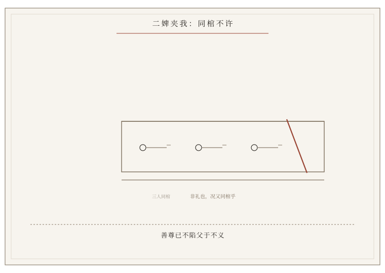

檀弓下 · 四·五十五 · 第 380 课
陈乾昔寝疾，属其兄弟而命其子尊已，曰：「如我死，则必大为我棺，使吾二婢子夹我。」陈乾昔死，其子曰：「以殉葬，非礼也，况又同棺乎？」弗果杀。
说什么事：陈乾昔病重，嘱托其兄弟，又命其子尊已，说：「我死后，一定给我做一口大棺，让我的两个妾夹着我。」陈乾昔死了，其子说：「以人殉葬，本就不合礼，何况又同棺？」终于没有杀。
落在哪一层：以「不奉乱命」为孝。父之言未必皆可从。
为何编在此位：上节君以「不释服」厚待贤臣，此节子以「不奉命」守住亡父。一厚一守，皆在情之极处见分寸。
【经】陈乾昔寝疾，属其兄弟而命其子尊已，曰：「如我死，则必大为我棺，使吾二婢子夹我。」陈乾昔死，其子曰：「以殉葬，非礼也，况又同棺乎？」弗果杀。
【注】婢子，妾也。／善尊已不陷父于不义。
【疏】此一节论人病时失礼也。／「属其兄弟而命其子尊已」者，尊已，乾昔子名也。兄弟言「属」，子云「命」，轻重之义也。／「曰如我死」者，此所属命辞也，欲言其死后事也。／「则必大为我棺，使吾二婢子夹我」者，婢子，妾也。属命云令大为己棺，又使二婢夹己于棺中也。／案《春秋》魏颗父病困，命使杀妾以殉，又晋赵孟、孝伯并将死，其语偷，又晋程郑问降阶之道，郑然明以将死而有惑疾，此等并是将死之时，其言皆变常。而《论语》：「曾子曰：『人之将死，其言也善。』」但人之疾患有深有浅，浅则神正，深则神乱，故魏颗父初欲嫁妾，是其神正之时。曾子云「其言也善」，是其未困之日。且曾子贤人，至困犹善。其中庸已下，未有疾病，天夺之魂魄，苟欲偷生，则赵孟、孝伯、程郑之徒不足怪也。
陈乾昔 人名。疏疑为一人之名，或为二人之称，先儒无说。
属 托付。对兄弟用「属」。
命 命令。对子用「命」。
尊已 陈乾昔之子名。
大为我棺 为我做大棺。
婢子 妾。
夹我 夹着我，即两侧同棺。
同棺 同在一口棺中。
弗果杀 终于没有杀。
陈乾昔病重，托付他的兄弟，又命令他的儿子尊已，说：「我若死了，一定要给我做一口大棺，让我的两个妾夹着我。」陈乾昔死了，他的儿子说：「以人殉葬，本就不合礼，何况还要同棺呢？」终于没有杀。
此章记一次不遵遗命。父在病中说了一句极重的话，子用一句极轻的理把它挡住了。
没有争执，没有解释，只一句「非礼也，况又同棺乎」。
第一层 「属其兄弟而命其子」 疏辨二字之分：「兄弟言属，子云命，轻重之义也。」
属是托付，命是命令。 对兄弟说「属」，是请其见证；对子说「命」，是要其执行。
此一字之差，说明陈乾昔知道此事的重量，也知道该由谁去办。
第二层 病中之言 疏引《论语》「人之将死，其言也善」，又举魏颗父、赵孟、孝伯、程郑诸事，断之曰：疾有深浅，「浅则神正，深则神乱」。
此一段是《檀弓》对「遗命」的总论。 它给出的判据不是「将死则善」，而是「神正与否」。
第三层 「必大为我棺」：一句的不合礼处 大棺而夹二妾，是两件事：一为厚葬，一为殉葬。
子之驳，只取后者：「以殉葬，非礼也，况又同棺乎？」
先驳其重者，再驳其兼者。 次序清楚：殉已非礼，同棺更甚。
第四层 「善尊已不陷父于不义」 郑注六字，是全章的定评。
孝之极致，不是照办，是不使父亲落进不义里。 若照办，则父之名随二妾之死而损；若不办，则父之命废而父之义全。
此一节立下一个极难的分寸：违命是孝。
第五层 违命的边界 此子所违者，是「杀人以殉」；所不违者，是大棺、是葬期、是其余一切。
他只违那一条不可行的。 遗命中合礼的部分，他一样照办。
故「不奉乱命」不是全盘否定，是择其不可者去之。 此一分别，为后世「乱命可不从」之说立下样板。
第六层 「弗果杀」：杀字 经文用「杀」，不用「殉」。
一字之实，见此事之性质：所谓殉葬，落到实处就是杀人。
此一用字，是《檀弓》的态度。
第七层 病与言之关系 疏末一段最耐读：「中庸已下，未有疾病，天夺其魂魄，苟欲偷生，则赵孟、孝伯、程郑之徒不足怪也。」
此语近于冷酷，而实为宽厚。 它把病中之乱言归因于病，不归因于人。故其子不怨父，只废其命。
与今日何干 今人论遗愿，多以「尊重」为名，一律照办。
此章给一句：尊重一个人，是尊重他清醒时的样子，不是执行他糊涂时的一句话。
| 左 | 右 |
|---|---|
| 寝疾 | 神或不正 |
| 属兄弟 | 托付 |
| 命其子 | 命令 |
| 必大为我棺 | 厚葬 |
| 二婢夹我 | 殉葬兼同棺 |
| 以殉葬非礼 | 先驳其重 |
| 况又同棺 | 再驳其兼 |
| 弗果杀 | 杀字见实 |
| 不陷父于不义 | 违命即孝 |
画一口棺的横剖面，视点正视。棺为一长方形大框，框内并列三个人形：中间一人平卧，左右各一人亦平卧，皆头朝同一方向，三人之间不留空隙。棺框的右上角画一道粗斜线划过，示此议被止。棺外下方画一条短横线为地。不画文字。赭色只用在那道粗斜线上。
